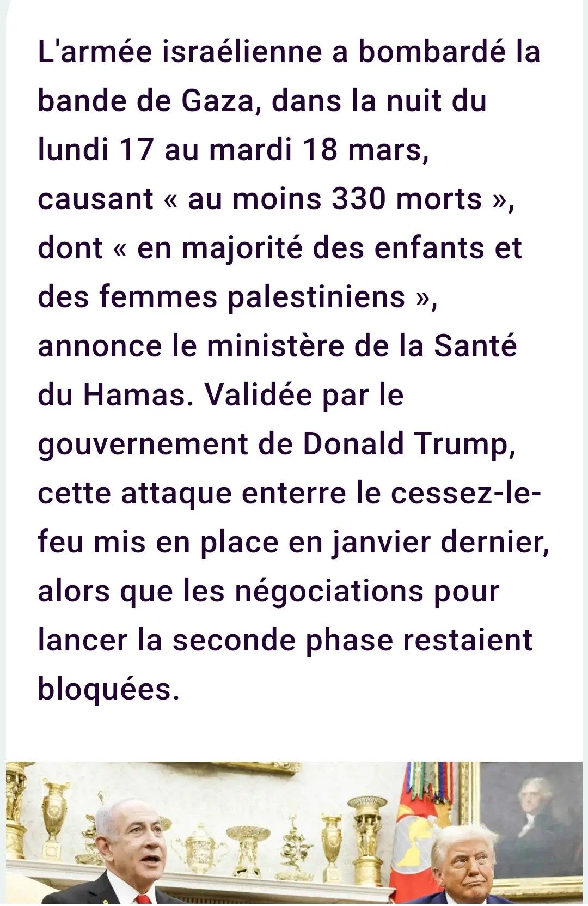

Publication d’archives
GAZA - Au moins 330 morts. Benyamin Netanyahou brise la trêve et reprend le massacre avec l'aval des…
Date indiquée par Facebook · 18 mars 2025
Texte conservé avec la publication
Contexte du dossier
Le Collectif Palestine 79 appelle à se retrouver le 4 janvier 2025 à 11 heures, place des Halles à Niort, pour le cessez-le-feu à Gaza et au Liban. La publication inscrit ce rendez-vous dans plus d’une année de mobilisation hebdomadaire. En mars, un autre texte dénonce la reprise des bombardements et rapporte un bilan de victimes très lourd. Ce bilan appartient à l’alerte publiée ce jour-là. Les deux traces montrent pourquoi la solidarité se maintient : les rendez-vous locaux ne sont pas détachés des vies menacées et de l’exigence d’arrêter la guerre.

Sources
Archive rouge · export Facebook · AR-0002-FB-01168
À lire aussi · Contrairement aux affirmations du ministre des Armées, la France livre « un flux ininterrompu » d'armes à…